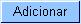

Esta
opção do sistema permite a
atualização das
informações de uma economia de
uma subcategoria do imóvel.
-
Complemento
Endereço: Informe a
descrição do complemento do endereço
(Ex: Apto 604, Loja 10, ...)
-
Número
de Pontos de Utilização:
Informe o número de pontos de abastecimento de
água existentes no imóvel.
-
Número
de Moradores:
Informe o número de moradores que residem no
imóvel.
- Número
de IPTU:
Informe o
número de inscrição do
imóvel na Prefeitura. O objetivo é viabilizar a
integração e troca de
informações com o
município.
-
Número
Contrato
Companhia de Energia:
Informe o número do contrato de fornecimento de energia
elétrica que o imóvel tem com a
companhia distribuidora de energia elétrica.
- Área
Construída(*):
Você tem duas maneiras de
informar este campo: Informando a área, em metros quadrados,
no campo mais a esquerda; ou selecionando a faixa da
área construída, no campo mais à
direita.
- Caso você informe a área do
imóvel no campo mais a esquerda, o sistema, automaticamente,
desabilitará o campo de seleção da
faixa e, internamente fará o enquadradamento do
imóvel na faixa de área construída
correspondente à área informada. Neste
caso o sistema armazena, tanto a informação da
área construída informada, como a
informação da faixa de área
construída, na qual, o imóvel foi
enquadrado.
-
Clientes
da economia:
- Inicialmente você deve
informar os dados do cliente que deseja inserir, selecionando o cliente
e informando o tipo da relação dele com o
imóvel (Proprietário, Usuário,
Responsável, ...). Caso o cliente não esteja
cadastrado, você deverá, primeiro,
inserí-lo através da opção
"Cadastro --> Cliente --> Inserir Cliente".
- Depois do cliente estar devidamente
selecionado e configurado, você deve clicar no
botão , para inserir o cliente na
tabela Nome do Cliente.
- É
obrigatório que um cliente do tipo "Usuário" seja
informado.
- Para
inserir
um
cliente, preencha os campos do cliente relacionados abaixo, e clique no
botão ,
que o cliente será inserido na tabela.
- Código(*): Informe
o
código de um cliente, e tecle "Enter", ou
clique no botão
"Pesquisar" , que fica ao lado do
campo. Neste caso
será apresentada uma tela de "popup",
onde será possível efetuar a pesquisa de
clientes. Após a
informação do código de um cliente
existente, ou da seleção de um cliente na
tela de pesquisa, o sistema apresentará o nome do cliente
no campo correspondente. Para obter ajuda sobre a funcionalidade
"Pesquisar Cliente", clique aqui.
- Tipo do
Cliente(*):
Selecione, na
lista apresentada, o tipo da relação do cliente
com o imóvel (Proprietário,
Usuário, ...).
- Data
Início Relação(*): Informe a
data de início da relação do cliente
com o imóvel, ou clique no botão do
calendário
 , para selecionar a
data a partir do calendário.
, para selecionar a
data a partir do calendário.
- Ao digitar a data
não é necessário informar as barras,
pois o sistema as coloca automaticamente.
- A data de início da
relação do cliente com o imóvel
não pode ser superior à
data corrente, nem inferior à data de nascimento do cliente,
caso este
campo tenha sido informado.
- Clique aqui
para obter a ajuda da tela do calendário, que é
acionada ao se clicar no campo correspondente.
 para
efetuar a atualização da economia e fechar a tela.
para
efetuar a atualização da economia e fechar a tela.